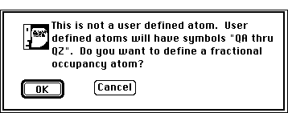
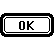
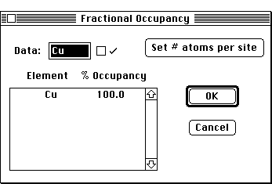
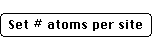

Desktop Manual
Desktop Manual
Hybrid Atom Definition Dialog Box
User Defined Atoms Dialog Box;:.i.Crystal:Crystal Definition:User Defined
Atoms;.i.Fractional Occupancy;.i.Crystal:Crystal Definition:Fractional Occupancy;
PATH...Parameter Menu:Define Unit Cells:Unit Cell
Dialog Box::<Element Symbol>
- Sometimes it is desirable for a particular atomic position to have
multiple elements associated with it. Desktop Microscopist supports this
capability by allowing the definition of complex atoms.
- The dialog box for the definition of a complex (or user defined) atom
is accessed from within the Crystal Definition
Dialog Box by double clicking on the atomic symbol of the desired atom.
- For example, it may be necessary to have the origin (0.0,0.0,0.0)
occupied in 90% of the cases by an Al atom, 5% of the time by Titanium atoms
and 5% of the time by Cobalt atoms. To define this case, go to the atom
currently at the origin and double click on it. The User Defined Atom
Alert Box will appear
.
Improper Atom Alert
This button will bring up the User Atom Definition Dialog
Box. A given crystal may have as many as 26 different user defined atoms.
There is no limit to the number of times any given user defined atom may
be used.

User Defined Atoms Dialog
- Up to 10 atoms and their relative atomic occupancy percentages may
be specified. Only atomic percentages are supported..i.User Defined Atoms:Dialog;
- This button is used to activate the Set Number
of Atoms Dialog Box.
- After the number of atoms has been specified, atomic symbols and the
desired atomic fractions may be entered.
- The highlighted value within the list is the value which may be altered
via the editable text box:
Author: J.ames T. Stanley
Distributed
By: Virtual Labs
Last Updated:1/12/96 Sat, Apr 27, 1996